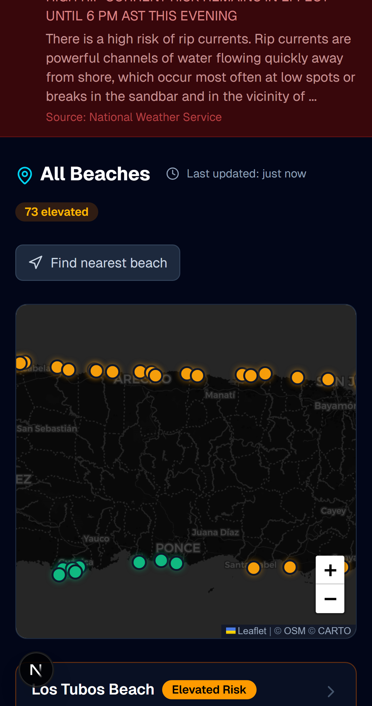

Safe Shores
Official ocean data, turned into decisions people can act on.
A bilingual public-safety platform covering 98 Puerto Rico beaches. It combines National Weather Service alerts, NOAA tides, live buoy observations, hazard profiles, geolocation, and an interactive map. When a live source cannot be verified, the interface says so plainly rather than assuming safety.
Next.js · React · TypeScript · Leaflet · NWS / NOAA APIs · PWA